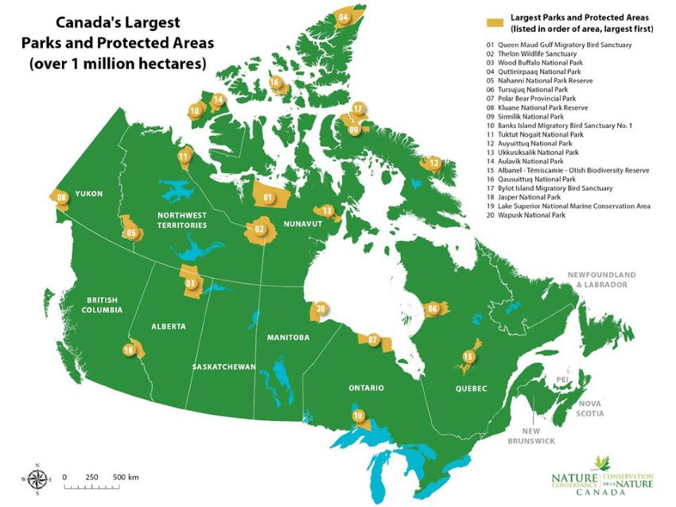

Websites about Protected Areas Issues
Visit World Conservation page. What is a protected area? A protected area is a clearly defined geographical space, recognised, dedicated and managed, through legal or other effective means, to achieve the long term conservation of nature with associated ecosystem services and cultural values. (IUCN Definition 2008)
Protected areas – national parks, wilderness areas, community conserved areas, nature reserves and so on – are a mainstay of biodiversity conservation, while also contributing to people’s livelihoods, particularly at the local level. Protected areas are at the core of efforts towards conserving nature and the services it provides us – food, clean water supply, medicines and protection from the impacts of natural disasters. Their role in helping mitigate and adapt to climate change is also increasingly recognized; it has been estimated that the global network of protected areas stores at least 15% of terrestrial carbon.
Important Websites Related to Protected Areas
- Protected Planet - Discover the world’s protected areas
- Open Edition Journals - Providing natural solutions to 21st Century challenges
- World Wide Fund For Nature - Protected Areas
- Panorama - Protected and Conserved Areas Solutions
- ESRI - Conservation solutions for protected areas
- Campaign for Nature - Protected Areas Have a Lot of Benefits
- National Geofraphic - Pceans need protection now
- Canada Largest Parks and Protected Areas
Is a top priority for us to take care of protected areas; human beings receive a lot from them, we all live in a World that provides beauty and lots of the resources we need to have a good life, so is our duty to be responsible and be extremely careful with our environment.
Canada Protected Areas
Canada’s greatest contribution to sustaining our planet’s biodiversity and ecological services may very well be our abundance. From some of the world’s largest intact forests and wetlands, to wild northern rivers, to spectacles of bird and mammal migrations, Canada is one of only a handful of countries with true wilderness and wild spaces remaining.
Thanks for your visit!